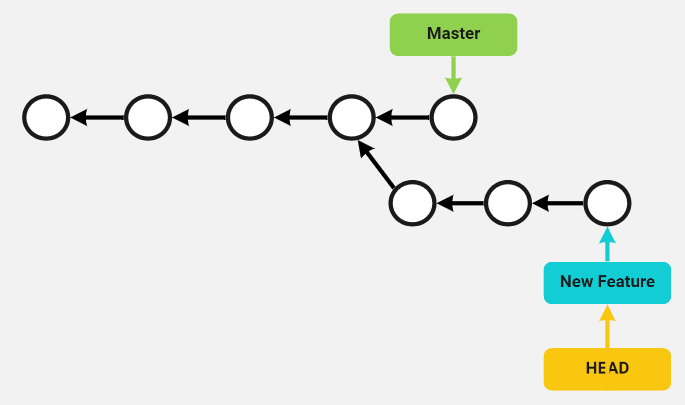

Branching allows us to divert from the main line of work, and work in something different in isolation. This allows us to develop new features without compromising the stability of our production code.
Branches in Git are fast and cheap because they are just pointers to different commits in a commit tree. Likewise, Git knows which branch we are working on by using another pointer called HEAD.


When we move from one branch to the other, what Git does is to reposition the HEAD pointer to the pointer of that branch.